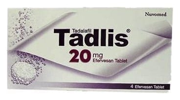

Tadlis 20 mg Efervesan Tablet, 4 Adet

Ne için kullanılır
KT · Bölüm 1TADLİS turuncu benekli, yuvarlak, düz yüzeyli efervesan tabletler halinde olup 2, 4 ve 8 efervesan tabletlik ambalajlarda yer almaktadır.
TADLİS, yetişkin erkeklerde erektil disfonksiyon tedavisi için kullanılan bir ilaçtır. Erektil disfonksiyon, cinsel aktivite için gerekli penis sertleşmesinin sağlanamaması veya sertliğin korunamaması durumudur. TADLİS’in cinsel aktivite için uygun penis sertleşmesinin sağlanması yeteneğini önemli ölçüde geliştirdiği gösterilmiştir.
TADLİS, tadalafil etkin maddesini içeren, fosfodiesteraz tip 5 inhibitörleri olarak adlandırılan ilaç grubuna dahildir. Cinsel uyarıyı takiben TADLİS, penis içerisindeki kan damarlarının gevşemesine yardımcı olarak kanın penis içerisine akışını sağlar. Bunun sonucunda peniste sertleşme gerçekleşir. Eğer sertleşme sorununuz yoksa TADLİS yardımcı olmayacaktır.
Cinsel uyarının olmadığı durumlarda TADLİS’in tek başına işe yaramayacağı önemle not edilmelidir. Bu nedenle sizin ve partnerinizin, sertleşme sorunu tedavisi için ilaç almıyormuş gibi, ön cinsel aktivitede bulunması gerekmektedir.